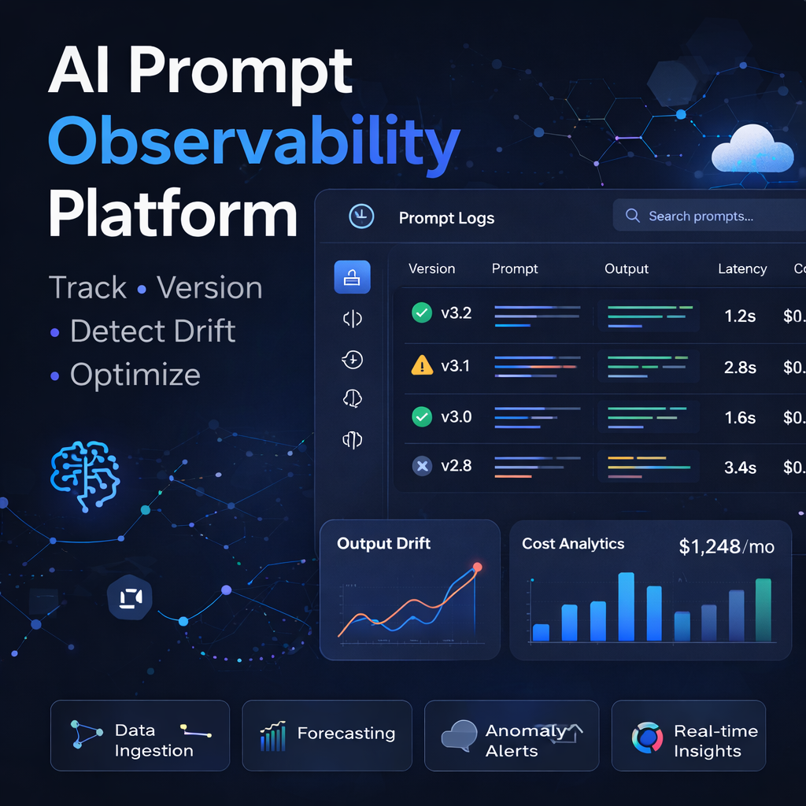
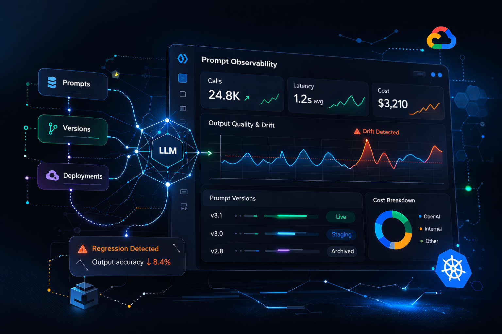
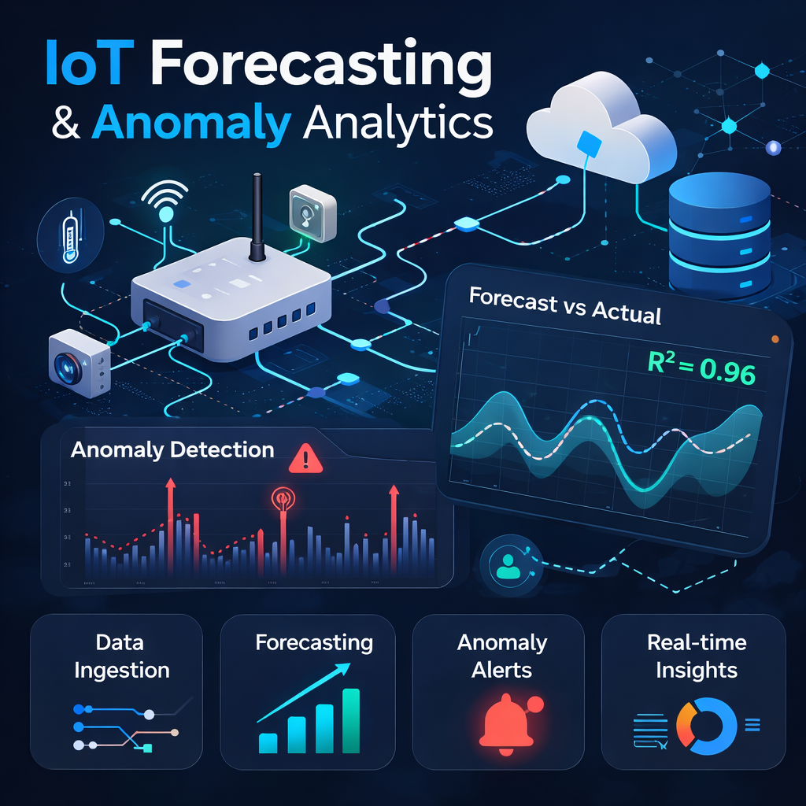
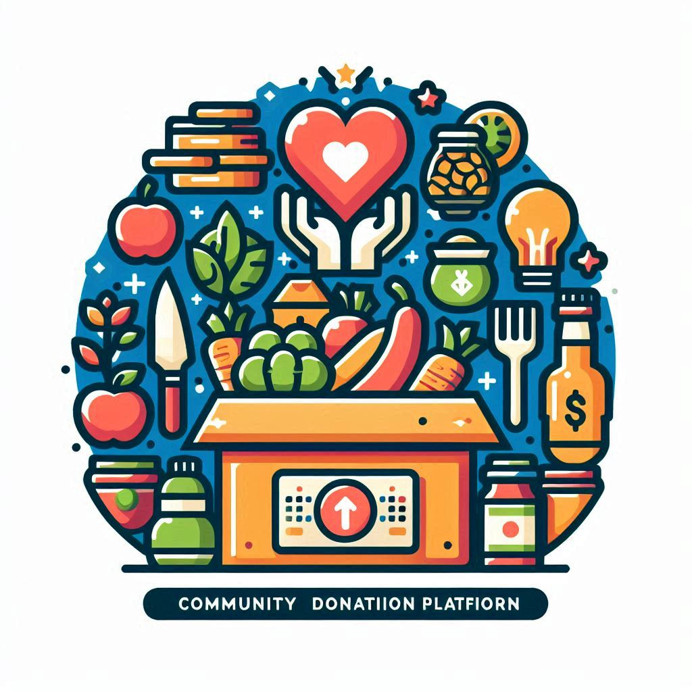
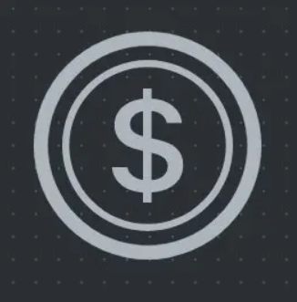
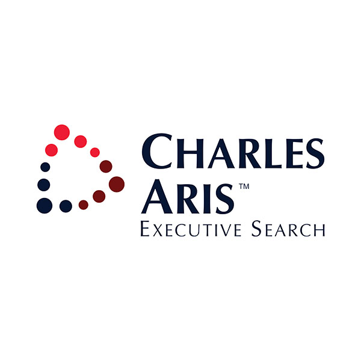
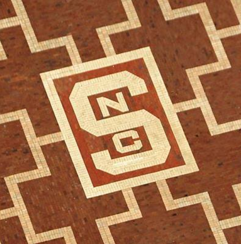
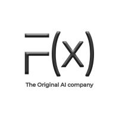
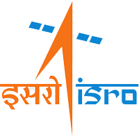

AI Prompt Observability Platform
Centralized platform to track LLM prompt inputs, outputs, latency, and cost across applications. Built prompt versioning and regression detection workflows to catch output drift before it reaches users.
Graduate student at NC State building AI-powered solutions at the intersection of machine learning, computer vision, and geospatial analytics. Prev. PayPal · ISRO · open-source contributor.
Hey! I am Jayneel Shah, a builder, researcher, and problem-solver passionate about the intersection of AI and real-world impact. I am pursuing my M.S. in Computer Science at NC State, focusing on machine learning, software engineering, and data science.
"The stack doesn't matter. The problem does." - My guiding philosophy in tech, research, and life.
My journey spans building computer vision systems to contributing open-source GIS tools used by researchers worldwide. I thrive on challenges, shipping production AI models, leading data teams, or hacking together a project at 3 AM during a hackathon.
I have had the privilege of working at PayPal (earning the Bravo Award for dashboard development), ISRO (India's space agency), and the Center for Geospatial Analytics developing open-source GRASS GIS modules. Each experience deepened my conviction that great engineering combines rigor with creativity.
Outside of code? Cricket pitch, Squash and pickleball courts, or hiking trails. An avid traveler, nature enthusiast, and total foodie!
Tools and technologies I use to build robust, scalable, and intelligent systems.
A selection spanning AI, machine learning, web development, and cybersecurity.

AI Prompt Observability Platform
Centralized platform to track LLM prompt inputs, outputs, latency, and cost across applications. Built prompt versioning and regression detection workflows to catch output drift before it reaches users.

Cloud-Native Affordability Digital Twin
Financial digital twin deployed on GKE using Bank of Anthos microservices to simulate real-time affordability scenarios. Engineered a Gemini-powered multi-agent chatbot serving live analysis through a production API.

IoT Forecasting & Anomaly Analytics
End-to-end forecasting pipeline on multivariate IoT sensor data, achieving R² of 0.96 on held-out test data. Designed anomaly detection experiments and visualizations to enable reliable alerting at scale.

Community Donation Platform
Donation platform with multi-category donations, image upload, and a gamified points system. Integrated a GenAI-powered therapy chatbot for real-time mental health support.
Dark Web CyberGuard Detection System
Cybersecurity tool to detect high-risk websites with dual-mode interface for web scraping and user-customized fraud detection.

CoinDrop
Intuitive simulation dashboard to track your portfolio, stay updated with the latest news, and make smart investment choices with ease.
A journey through companies where I have built, shipped, and made an impact.

Developing AI-powered workflows to automate executive search processes and enhance data research capabilities in recruitment intelligence.

Contributed to open-source GRASS GIS development, improving software quality and implementing geospatial modeling features used by researchers worldwide.

Developed computer vision models and AI-powered applications, integrating frontend interfaces for seamless user experiences in financial analytics.
Received the Bravo Award for outstanding dashboard development. Leveraged data analytics to drive business insights and strategic decision-making at scale.

Developed machine learning models for space research applications, utilizing containerization for deployment in mission-critical environments.
Building the foundation to tackle tomorrow's hardest problems.
Focus: Software Engineering, Artificial Intelligence, Machine Learning, Data Science.
Status: Final semester, actively seeking full-time opportunities post-graduation (May 2026).
Strong foundation in CS fundamentals, data structures, algorithms, and software development. Graduated with hands-on project experience and team leadership roles.
A LinkedIn recommendation from my manager at PayPal.
I am actively looking for full-time opportunities in Software Engineering, AI/ML, Data Science, and Data Analytics starting May 2026.
Whether you have a role that fits, a project to collaborate on, or just want to say hi, my inbox is always open. I typically respond within 24 hours!
I am particularly excited about roles where I can apply AI/ML to solve real problems at scale, convert messy data to insights, contribute to product decisions, and work with talented teams who care deeply about their craft.
Send me an email